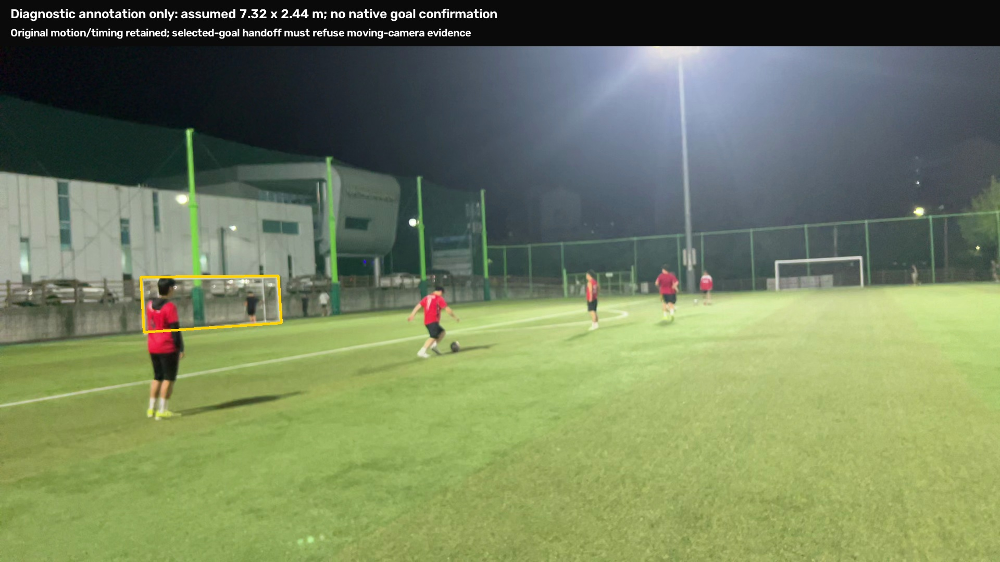

Measured local response
34–47 ms median; 66–120 ms p95 in localhost WebSocket replays, with 227 matched responses and no transport drops. This excludes phone upload latency and the time needed to confirm a shot.
A review of the streaming pilot and your recorded pitch clips: what works, what the footage shows, and what still needs to improve.
Select one player, one active ball and one target goal. Leave the app running while it recognizes attempts, saves each clip once, and resets for the next kick. Other people's actions must not become the selected player's shots.
| Problem | Current status | What this means |
|---|---|---|
| Camera placement | Pilot implemented | Guidance checks goal visibility, player framing, ball detail and stillness. It is not yet a validated best-angle solver. |
| Goal & free-kick position | Estimated | Confirm/correct four goal corners. Project a ground point using camera intrinsics and goal pose. Default goal: assumed 7.32 × 2.44 m. Ball: assumed size 5. |
| Optional AR measurement | Not implemented | Manual dimensions exist. In-app AR measurement remains work to do; dimensions need provenance and independent checking. |
| Ball & selected kicker | YOLO pilot | Tap the body and active ball. Track them over time; explicitly reacquire a lost player. No selfie required. |
| Repeated attempts | Field validation needed | Departure, player proximity and audio combine into one event with cooldown/reset. Synthetic two-attempt tests pass; your pitch replays have no confirmations. |
| Speed & 3D trajectory | Unresolved on clips | Original timing, camera calibration, ball observations and trustworthy scale must support the physical fit. A detection box alone cannot supply depth or speed. |
| Body mesh & useful feedback | Diagnostic only | The correct kicker can be reconstructed for part of clip 10. Joint-angle plots are exploratory; accuracy and actionable coaching still require validation. |
First scope: A — one selected player. Later: B — associate different players with their attempts. Multiple moving balls is a separate extension.
After an attempt, the original clip and sidecar go to the ball solver and optional GVHMR body reconstruction. The sidecar carries capture timing, camera intrinsics, motion and selection information; it does not itself establish measurement accuracy.
34–47 ms median; 66–120 ms p95 in localhost WebSocket replays, with 227 matched responses and no transport drops. This excludes phone upload latency and the time needed to confirm a shot.
JPEG preview at nominal 15 fps is a Wi-Fi pilot: approximately 10–30 Mbps if sustained. Efficient H.264/WebRTC, cellular performance, battery and thermal behavior still need work.
YOLO is the implemented live person/ball detector. Earlier development checks found YOLO small/medium detected 17 of 22 annotated ball points, versus 2 of 22 for full-frame WASB and 1 of 22 for region-based WASB. These tiny development samples are not a held-out accuracy benchmark. Fast-flight tracking remains unresolved, and the offline physical solver is still separate from live YOLO.
The YOLO engine processed 452 sampled frames across these four clips. Tracking gaps, movement and missing ball evidence prevented confirmed shots. Expand each card to see the separate background-motion review.
YOLO ball/player replay · no confirmed attempt
Separate diagnostic replay. Once movement invalidates calibration, the state remains latched until the goal is selected again.
YOLO ball/player replay · no confirmed attempt
Separate diagnostic replay. Once movement invalidates calibration, the state remains latched until the goal is selected again.
YOLO ball/player replay · no confirmed attempt
Separate diagnostic replay. Once movement invalidates calibration, the state remains latched until the goal is selected again.
YOLO ball/player replay · no confirmed attempt
Separate diagnostic replay. Once movement invalidates calibration, the state remains latched until the goal is selected again.
Derived comparison videos. All eleven original recordings and ten original sidecars were preserved unchanged.
Automatic white-goal proposals require confirmation, with four-corner correction. The setup review found only one unconfirmed distant-goal proposal in 12 sampled frames, so automatic goal selection is still unreliable.
The selected goal is now passed to post-shot analysis. An invalid or motion-invalid explicit selection produces a refusal; it cannot silently switch to another goal. Assumed, manually entered and AR-estimated dimensions stay unverified and cannot enable an exact speed or apex claim.

Diagnostic annotation, not native confirmation: clip 10 predates live goal selection. A separate fixture used assistant-annotated corners and a simulated client calibration assertion while retaining the original timing, intrinsics and motion.
Across 227 motion-review frames: 0 stable, 3 unknown, 224 invalidated after the motion state latched. Visual background checks caught movement in two clips even when the instantaneous angular-motion threshold said still.
The clip 10 API handoff preserved the selected corners and refused camera motion, returning no metric reference and no speed in approximately 5.6 seconds.
A synthetic ballistic clip passes the real fitting path using the explicitly selected goal, without invoking automatic goal detection. Assumed dimensions still cannot enable exact physical claims.
This verifies software integration. It does not validate field accuracy.
Motion checks compare a fixed visual background and need distributed features plus a warm-up. Too little evidence stays unknown. Detected movement requires goal reselection. The offline path conservatively rejects excessive whole-clip motion; salvaging stable subintervals remains open.
The most-moving rule picked the wrong subject. Only 46 / 118 pose frames had sufficient support; reconstruction was refused.
A manual frame-zero player hint selected the intended kicker: 114 / 118 supported pose frames. Total run: 257 s; fitting/rendering: 105 s.
These show model estimates over the supported portion of clip 10. They can help inspect the fit; they are not independently validated joint measurements or coaching recommendations.
Useful future comparisons include knee bend, trunk lean, hip/shoulder rotation, plant-foot placement and follow-through. Each needs validation. This run establishes no reliable contact time, foot-to-ball placement, foot speed, force, balance score or injury-risk conclusion.
1,780 tests passed: mobile 893, API 524, vision 246, external pipeline 117. Twelve tests were skipped. Type checking, lint and architecture checks pass, with 17 existing mobile lint warnings. All 21 browser frames were re-shot.
Contract generation is repeatable. The aggregate check still stops at its index-based drift gate because the contract changes are uncommitted; individual checks ran separately. Browser fixtures and synthetic stream tests do not validate physical camera use.
The updated signed Release was installed in place on the phone. The pilot services run independently of the chat in the Mac user session; they stop at logout/reboot. Mesh remains an on-demand job. This report is a static review, not a hosted inference service.